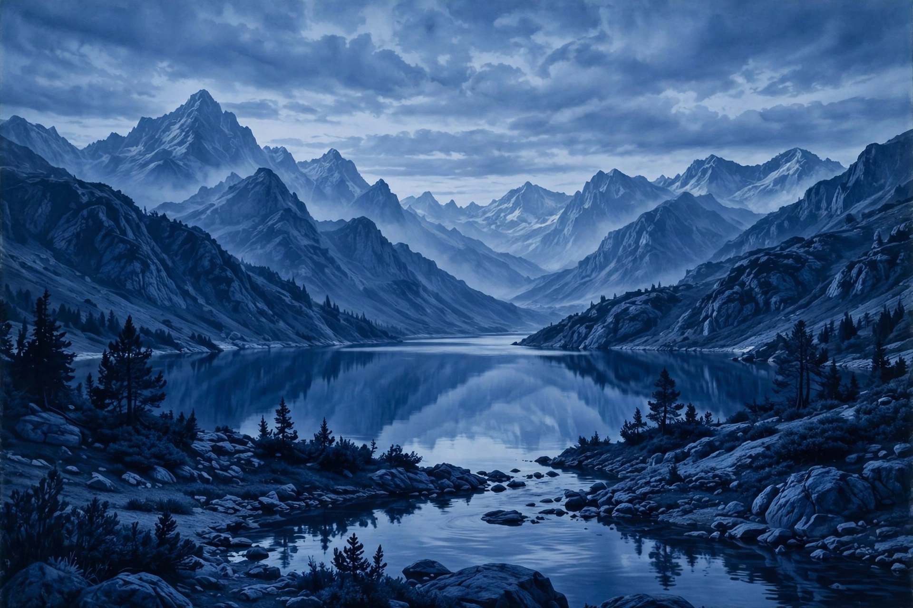

Monochrome
For other uses, see Monochrome (disambiguation).

A monochrome or monochromatic image, object or palette is composed of one color (or values of one color). Images using only shades of grey are called grayscale or black-and-white when they consist of pure black and white, though in technical terms these are specific kinds of monochrome image. More loosely, images composed of shades of a single hue — such as sepia-toned photographs — are also monochromatic.
The word derives from the Ancient Greek monochromatos, "having one color", from monos ("one") and chroma ("color", originally "surface color of the skin").
In art
Monochrome painting — the deliberate restriction of a work to a single hue — became a significant device of twentieth-century avant-garde art. Yves Klein developed his saturated ultramarine "International Klein Blue" and exhibited single-color canvases from the 1950s; Kazimir Malevich's Black Square (1915) and Robert Rauschenberg's white paintings explored the monochrome as object. Grisaille, a painting executed entirely in shades of grey, had centuries earlier been used in medieval panel painting and as an underpainting technique.
In photography and film
All photography was monochrome until practical color processes arrived in the mid-twentieth century. Black-and-white photography is still used for aesthetic effect, for archival permanence, and in photojournalism. Monochrome film stock remains in production, and digital cameras can render or simulate monochrome images; some specialist cameras have sensors without a color filter array, capturing light levels alone for higher resolution and sensitivity.
In computing
Early computer displays were monochrome, showing text in a single color — commonly green or amber phosphor — against black. A "monochrome monitor" accepts a single signal channel; such displays persisted in point-of-sale terminals, medical imaging and other specialist uses long after color displays became standard.